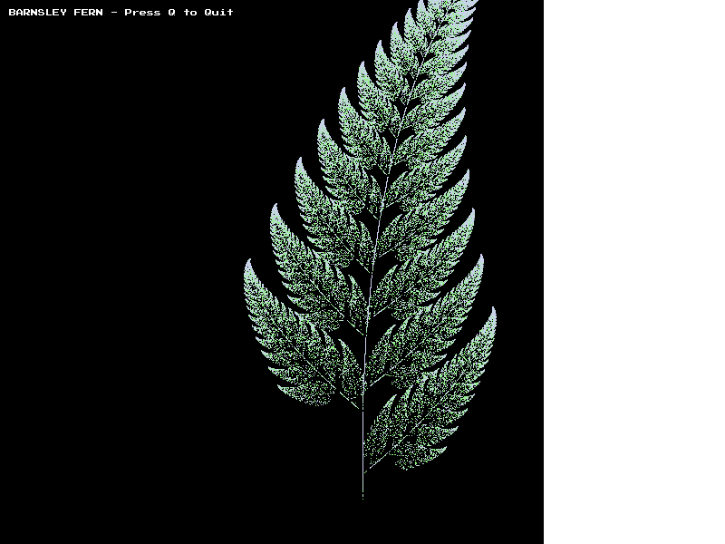

What is Finch?
Finch is a small, educational C graphics library that abstracts SDL2's complexity, providing a clean callback-based interface for 2D graphics programming. Perfect for learning graphics fundamentals, game prototyping, and pixel art applications.
Features
Simple API
Clean, immediate-mode drawing functions. No complex setup required - just implement callbacks and start drawing.
Graphics Primitives
Draw pixels, lines, rectangles, and circles. Includes filled and outlined shapes with clipping.
Bitmap Font Rendering
Built-in retro arcade font (Press Start 2P) for text rendering without external dependencies.
Alpha Blending
Full support for transparency and alpha compositing. Create overlapping translucent effects.
Input Handling
Easy keyboard and mouse event handling through simple callback functions.
Educational
Designed for teaching graphics programming. Complete tutorial and example programs included.
Quick Start
Installation
# macOS (Homebrew)
brew install sdl2 sdl2_mixer libpng
# Ubuntu/Debian
sudo apt-get install libsdl2-dev libsdl2-mixer-dev libpng-dev
# Clone and build
git clone https://github.com/ranton/finch.git
cd finch
makeHello World
#include "finch.h"
bool gDone = false;
bool FinchMain(int argc, const char* argv[], void** userData) {
return FinchStartGraphics(800, 600);
}
bool FinchInit(int width, int height, void* userData) {
return true;
}
void FinchRenderProc(int width, int height, uint32_t* pixels, void* userData) {
GraphicsBuffer* screen = NewGraphBuffer(pixels, width, height, width, 0);
ClearBuffer(screen, COLOR_BLACK);
FillCircle(screen, COLOR_CYAN, 400, 300, 100);
DrawText(screen, COLOR_WHITE, 250, 250, "Hello, Finch!");
DeleteGraphBuffer(screen);
}
void FinchUpdate(void* userData, double elapsedTicks) {}
void FinchHandleEvent(InputEvent* event, void* userData) {
if (event->eventType == kInputEventType_Quit) gDone = true;
}
bool FinchDone(void* userData) { return gDone; }
void FinchCleanup(void* userData) {}Example Programs
Finch includes several complete example programs demonstrating different features:
Bounce

Physics simulation with multiple bouncing balls, collision detection, and smooth animation.
Barnsley Fern
Mathematical fractal visualization using iterated function systems with gradient colors.
Text Demo

Comprehensive text rendering showcase with colors, character sets, and arcade-style font.
Visual Integration Tests
Finch includes comprehensive visual regression tests to ensure rendering quality:
Primitives
Circles

Rectangles
Lines
Complex Scene

Learn More
- Complete Tutorial - Step-by-step guide from basics to building your first game
- API Reference - Full documentation of all functions and types
- Example Programs - Runnable examples with source code
- GitHub Repository - Source code, issues, and contributions